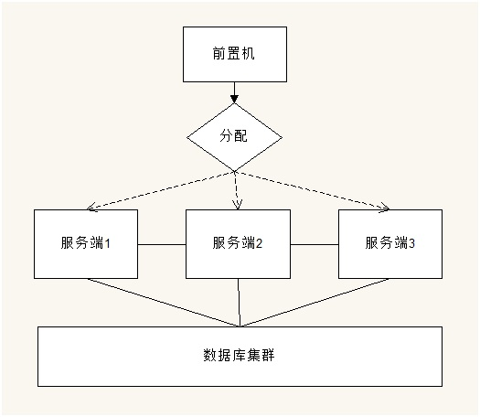
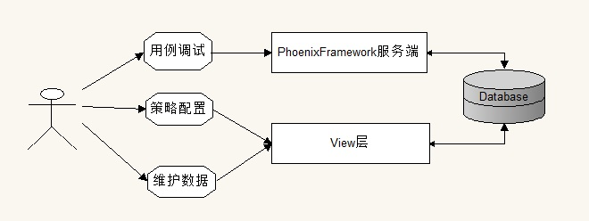
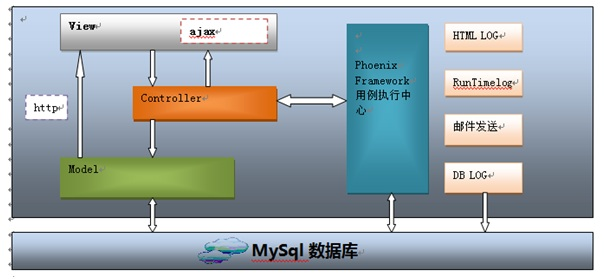
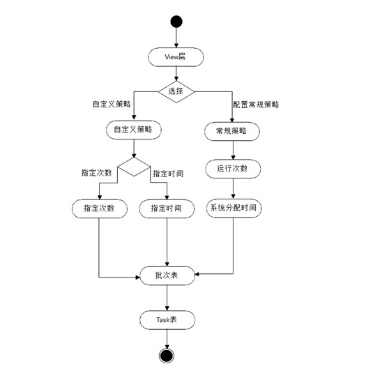
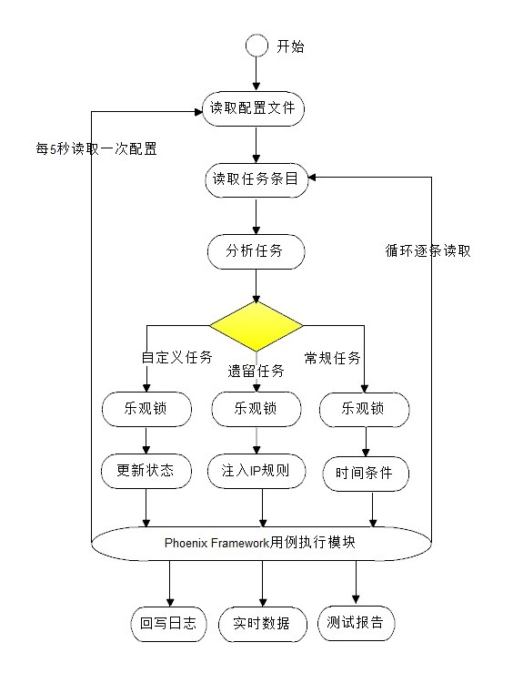
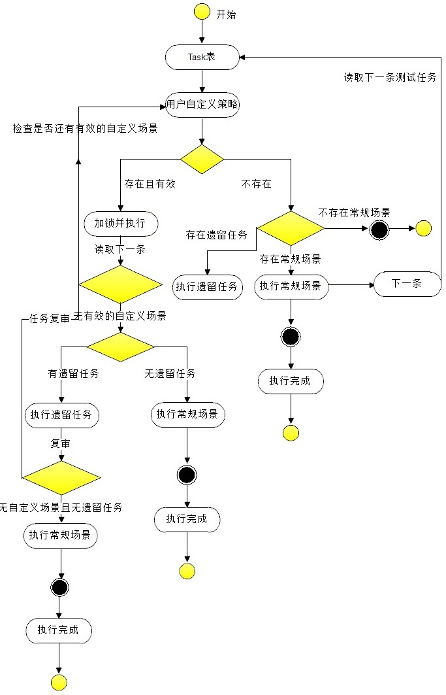
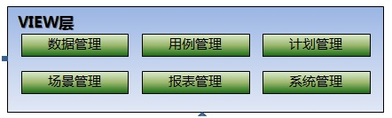
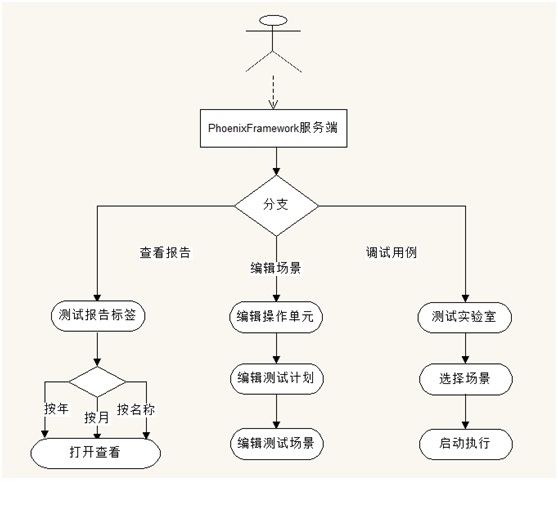

互联网部署方式既可以在Linux下部署也可以在Windows平台下部署。但需要程序源代码,可在 联系方式 模块联系我。互联网部署方式具有以下特点：
常规策略执行，循环不断的执行数据库中的场景
优先策略执行，测试人员临时配置的场景优先执行
可在Tomcat或Weblogic下部署，方便与其他Web系统集成
双机高可用，一台服务器出现故障后不会影响正常的测试流程
下面详细讲一下该模式的部署结构和架构设计：
互联网部署模式说明

用户访问服务端时，前置机会根据相应负载均衡算法分配一台可用机。服务端之间相互可以调用。各个服务器连接同一个数据库集群。本文着重针对服务端结构和执行策略结构设计进行说明，对前置机及数据库集群的部署不做描述。先说一下用户的角色分配。请看下图：

上图显示,用户在系统中主要操作两个接口，即View层与Phoenix Framework服务端。只做3样工作：调试用例、策略配置、维护数据。自动化的其他工作均由系统自动完成。下面我们在看一下该部署模式下服务端的结构设计。
服务端结构设计

技术说明：
Spring + ibatis + velocity + ajax + phoenixframe + mysql
表示层采用velocity，采用ibatis持久化对象，springIOC配置javabean的实际调用，以Spring相关类作为控制器控制页面转发，技术核心为spring MVC。
以下为一些典型使用场景：
正常启动流程（用户通过浏览器打开改地址时）：
前置机分配请求到View层 --> 用户从View层发出请求 --> Controller层 -->Controller委托模型处理、选择视图并为视图赋值-->将模型推送给view层并同时在库中生成测试Task -->执行中心获取Task进行执行。
自动化控制流程：
用户从View层发出请求 --> Controller层 -->Controller委托模型处理、选择视图并为视图赋值 -->Controller层调用Phoenix Framework用例执行中心 -->从数据库获取执行数据（后续可扩展手动开发的用例) --> 开始执行 -->向Controller发送执行进展及健康状况 及 产生一系列的测试报告（包括向数据库写入的报告信息) --> Controller选择视图 -->View层（用户可以看到执行已经开始了)
自动化监控流程：
用户从View层发出请求 --> Controller层 -->Controller委托模型处理、选择视图并为视图赋值 -->Controller层调用Phoenix Framework用例执行中心 -->从数据库获取执行数据（后续可扩展手动开发的用例) --> 开始执行 -->向Controller发送执行进展及健康状况 --> Controller选择视图 -->View层（用户可以看到执行已经开始了) --> View层的ajax启动（自动或手动） --> 请求Controller --> 请求Phoenix Framework执行中心 -->返回执行进展及健康状况 --> Controller --> View（数据展示）
测试数据维护流程：
用户从View层发出数据维护请求 --> Controller层 -->请求Model层数据 -->Controller选择视图，并为视图赋值 -->View层展示 -->修改完成-->调用Controller执行对应组件-->Model层-->dao-->数据写入DB
策略配置流程：
用户从View层发出数据维护请求 --> Controller层 -->请求Model层数据 -->Controller选择视图，并为视图赋值 -->View层展示 -->修改或新增策略（优先级比常规策略高）-->调用Controller执行对应组件-->Model层-->dao-->数据写入Task表。该过程的活动图如下：

可以看出，在该框架体系中，执行策略的配置和执行尤为重要。因为该模块负责解析策略，并调用场景执行实体进行执行。此外，配置文件也是动态更新的，这就需要动态加载并且动态从Task表中拉取待执行的场景。下面讲解一下策略的读取与选择过程。
执行策略的读取与选择
1、执行策略的读取
为了执行顺序的有条不紊和管理的方便，我们采用1:1模式，即每台服务端的场景拉取线程每次只拉取一个待执行场景，然后锁定该场景，由执行策略分配线程解析策略，最后调执行实体执行。请看如下图：

执行中心启动时，会同时启动4个模块。4个模块的首次启动顺序为：
更新配置的模块 --> 场景拉取模块 --> 执行策略分配模块 --> 场景执行实体。
待场景执行实体启动后，更新配置定时器会每隔一段时间从库中拉取一次配置参数，且这个动作是重复的。后续每次场景执行实体模块会重复按顺序执行：场景拉取模块 --> 执行策略分配模块--> 场景执行实体模块。
2、执行策略的自动选择过程
这也是该部署方式的核心模块，请看活动图：

系统会对task表中的场景循环逐条的进行判断，优先级分别是：用户自定义场景 --> 遗留场景 --> 常规场景。
该模块的数据库表设计较为复杂，但也是一个亮点，感兴趣的同仁可以在 心得交流区 给我留言，或者在 联系方式 中联系我，一起沟通交流。
外部接口说明
系统还向外部提供了一些接口，方便用户或其他系统与该系统的沟通。以下讲解两大类型的接口：
为用户提供的接口：
View 层为为用户提供的使用接口，共有6大模块，如下图：

其中场景管理包括策略的配置。用户配置策略和常规执行策略均在这一模块。系统管理主要针对系统的一些重要参数做配置。
为其他系统提供的接口：
系统向外部提供service，请求由Controller处理并以xml形式返回处理结果。请求地址例如：
http://localhost:8080/phoenix-web/servletrequest.service?name=test&password=test
Phoenix Framework服务端行为：
用户可以通过Phoenix Framework的服务端对用例进行调试、查看报告、场景编辑等工作。如图：

Phoenix Framework的互联网部署模式讲解完毕，如果您对内容有意见或好的建议，请在 联系方式 联系我，或者在 心得交流区 提交留言，我会认真对待您给出的宝贵建议。